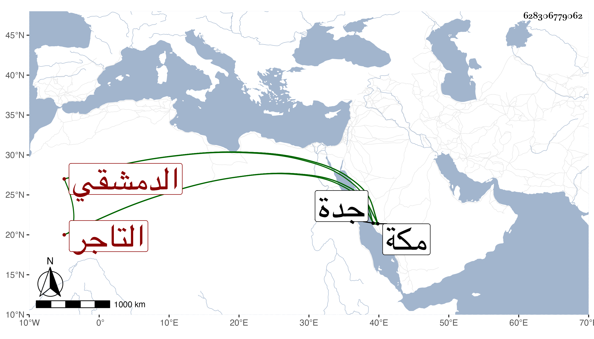

0902Sakhawi.DawLamic.ITO20230111-ara1.EIS1600.628306779062
Biography ID: 628306779062
493
عثمان الدمشقي التاجر نزيل مكة وأخو محمود الآتي وعبد الكريم الماضي يعرف بالقاري نسبة لقارا المعروف أهلها . وهو ابن عبد الله بن يعقوب قطن مكة وتزوج بها ابنة الشهاب بن خبطة بعده واستولدها ومات بجدة وقد قارب الخمسين في حياة أمه في جمادى الثانية سنة ثمان وثمانين وحمل إلى مكة ودفن بها ، وكان متمولا غير متبسط كعادة نظرائه غالبا رحمه الله.
